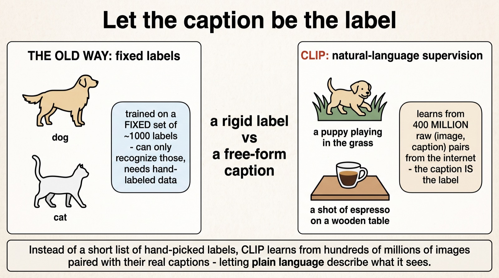
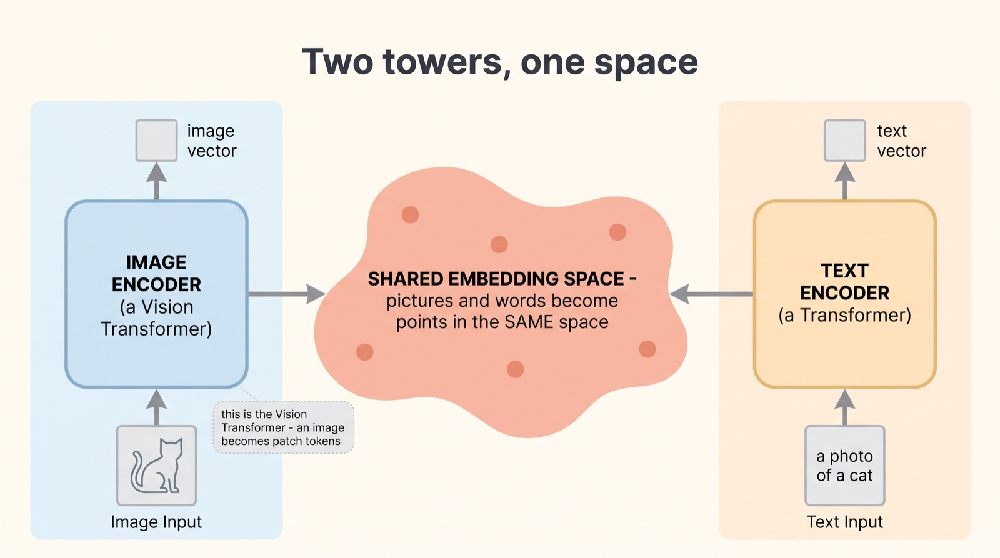
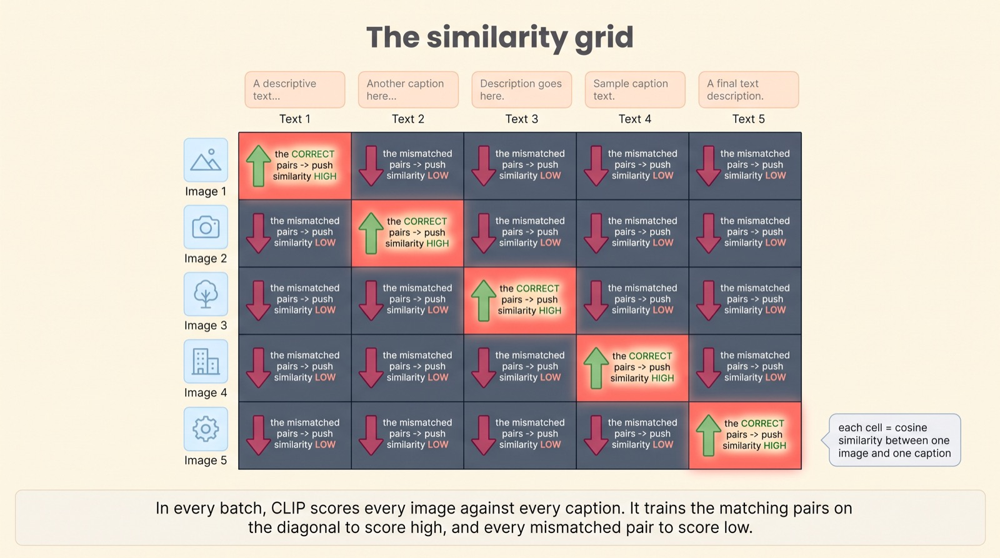
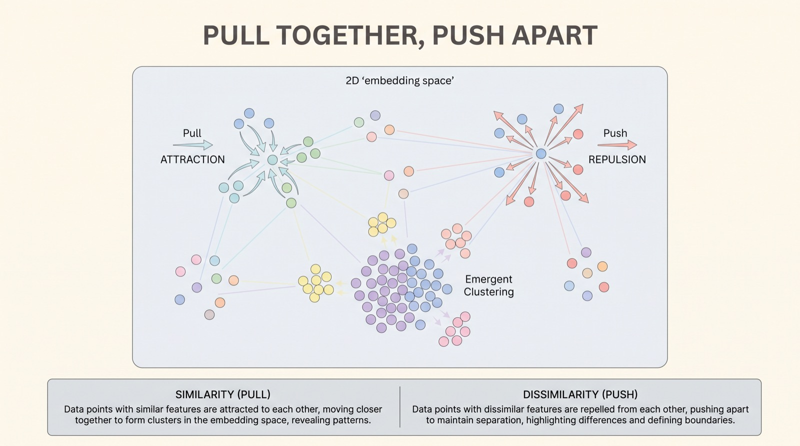
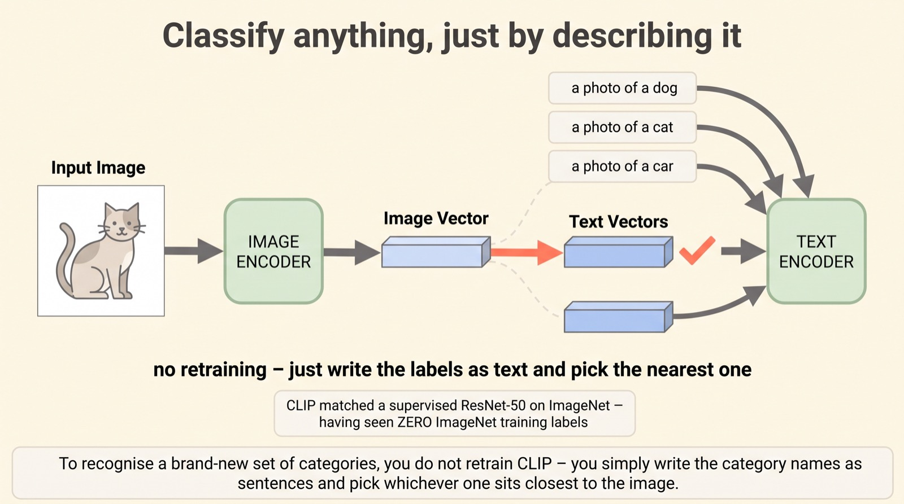
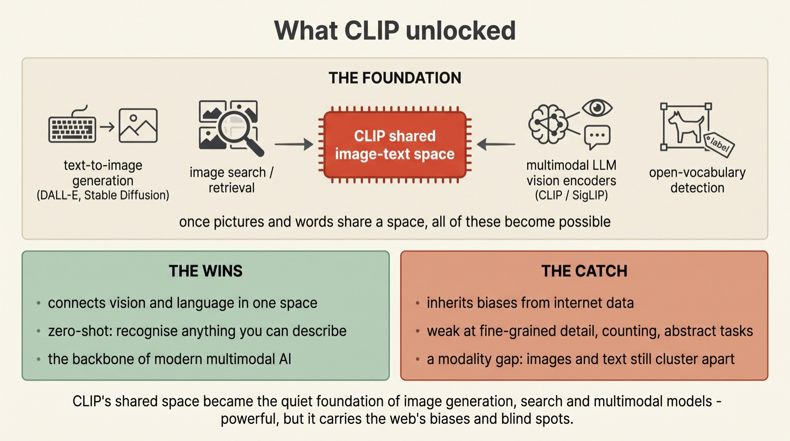

CLIP: how a model learns to connect images and text
Pull together,
push apart
Yesterday we saw how a Vision Transformer turns an image into tokens. Today, what it plugs into. CLIP takes an image encoder and a text encoder and trains them to agree — pulling a picture and its caption together in a shared space, and shoving mismatches apart. From that one idea comes image search, text-to-image generation, and the eyes of nearly every multimodal model.
CLIP — Contrastive Language-Image Pre-training — was released by OpenAI (Radford et al.) in 2021. It learned from 400 million raw image-caption pairs scraped from the web, with no hand-labeled categories. The payoff was startling: it could classify images into any categories you could describe in words, zero-shot, matching a supervised ResNet-50 on ImageNet without ever seeing its labels.
Scroll to begin.
↓
Let the caption be the label
For years, teaching a computer to recognise images meant handing it a fixed list of labels. You'd assemble a dataset — say ImageNet, with its 1,000 categories — and painstakingly tag each of a million-plus images with exactly one of those words. The model learned to sort pictures into those 1,000 boxes, and only those. Ask it about anything outside the list and it was helpless.
CLIP threw that whole setup out. Instead of a curated list of labels, it learned from something the internet has in near-infinite supply: images paired with their natural-language captions. A photo and the sentence someone wrote next to it. No taxonomy, no hand-labeling — the caption itself becomes the supervision. Do that across 400 million image-text pairs and you get a model that has seen the visual world described in ordinary words.

That shift — from a rigid label to a free-form caption — is what makes everything else possible. But it raises a puzzle. An image and a sentence are utterly different kinds of things. How do you train a model to see that this picture and that sentence belong together? The answer is two towers and one shared space.
Two towers, one space
CLIP is built from two separate networks — a dual encoder. One is an image encoder: give it a picture and it produces a vector, a list of numbers summarising the image. This is exactly where yesterday's Vision Transformer lives — the image is chopped into patches and turned into a single vector. The other is a text encoder: give it a caption and it produces a vector too.
On their own, those two vectors would live in incompatible worlds — an "image space" and a "text space" that can't be compared. CLIP's entire job is to train the two encoders so their outputs land in one shared embedding space. In that space, a picture and a sentence are both just points — and, crucially, you can measure how close any point is to any other. Once an image and a caption are points in the same space, comparing them becomes a matter of simple geometry.

So the model can now turn pictures and words into comparable points. But nothing yet tells it which pictures and words belong together. That's the training objective — and it's the clever heart of CLIP.
The similarity grid
Here's how CLIP actually learns, and it's beautifully direct. Take a batch of, say, N image-caption pairs. Encode all N images and all N captions into vectors. Now build an N×N grid: every image down one side, every caption across the top, and in each cell, the similarity between that image and that caption.
Look at that grid and the goal is obvious. The diagonal cells are the real pairs — image 1 with its own caption 1, image 2 with caption 2. Those should score high. Every other cell is a mismatch — image 1 with caption 5 — and those should score low. So CLIP trains on exactly that: push the similarity of the N matching pairs up, and push the N²−N mismatched pairs down. One grid, one clear instruction.

This is what "contrastive" means: the model learns by contrast — not just what matches, but what doesn't. Every wrong pairing in the grid is a tiny lesson in what a caption is not about. And each of those pushes and pulls, repeated billions of times, slowly reshapes the shared space itself.
Pull together, push apart
Step back from the grid and picture what it does to the shared space geometrically. Every matching image-caption pair is a little spring pulling two points together; every mismatch is a force pushing two points apart. Run that over hundreds of millions of examples and the space stops being random — it organises itself.
A photo of a dog drifts toward the words "a photo of a dog." Photos of cars gather near sentences about cars. Concepts that mean similar things — regardless of whether they arrived as pixels or as text — end up as neighbours. The space becomes a map of meaning, where nearness means relatedness, and images and captions are woven into the same fabric.

Classify anything by describing it
Now for the payoff that made CLIP famous, and it follows almost automatically from the shared space. Suppose you want to sort photos into categories the model was never explicitly trained on — say, your own custom list. With an old model you'd collect data and retrain. With CLIP, you do neither.
Instead, you write each category as a little sentence — "a photo of a dog," "a photo of a cat," "a photo of a car" — and run them through the text encoder to get their vectors. Then you encode the mystery image and simply ask: which caption's vector sits closest? Whichever one wins is the answer. No retraining, no new data — you classify an image just by describing the options. This is zero-shot classification, and its most quoted result is that CLIP matched a fully-supervised ResNet-50 on ImageNet having seen zero of ImageNet's training labels.

Read that again, because it's the whole magic in one line: the model classifies things it was never taught to classify, purely because it learned a space where pictures and words already live together. And once you have that space, a great deal more than classification opens up.
What CLIP unlocked
CLIP's deepest contribution wasn't a benchmark number — it was that shared image-text space itself, which turned out to be a piece of foundational infrastructure. Once pictures and words are points in one space, an astonishing range of things becomes easy.
Image search is just "find the image nearest this text." Text-to-image generation — the DALL-E and Stable Diffusion wave — leaned on CLIP's space to steer pictures toward a prompt's meaning. And the vision encoders inside modern multimodal LLMs — the part that lets a chatbot look at a photo — are very often a CLIP or its descendant, SigLIP. But be honest about the limits too. CLIP inherits the internet's biases along with its knowledge; it's weak at fine-grained detail, counting, and abstract reasoning; and researchers have found a curious "modality gap" — even in the shared space, images and text still cluster in somewhat separate regions rather than perfectly overlapping.

Why this matters
CLIP is one of those ideas whose influence is far larger than its fame. Most people have never heard of it, yet they use its descendants every day — every time an app searches images by description, every time a model generates a picture from a prompt, every time a chatbot describes a photo you send it. Under all of that is the same shared space, learned by pulling matches together and pushing mismatches apart.
And the lesson generalises beyond vision. The contrastive recipe — learn a shared space by contrasting what goes together with what doesn't — has since been applied to audio and text, video and text, code and language, even proteins. Whenever you want two different kinds of data to understand each other, this is the first tool people reach for.
So the idea to carry away is bigger than "CLIP connects images and text." It's that intelligence across modalities may come down to a shared space of meaning — and that you can build one, cheaply and at scale, with nothing more than pairs of things that belong together and a rule as simple as pull the matches close, push the rest away.